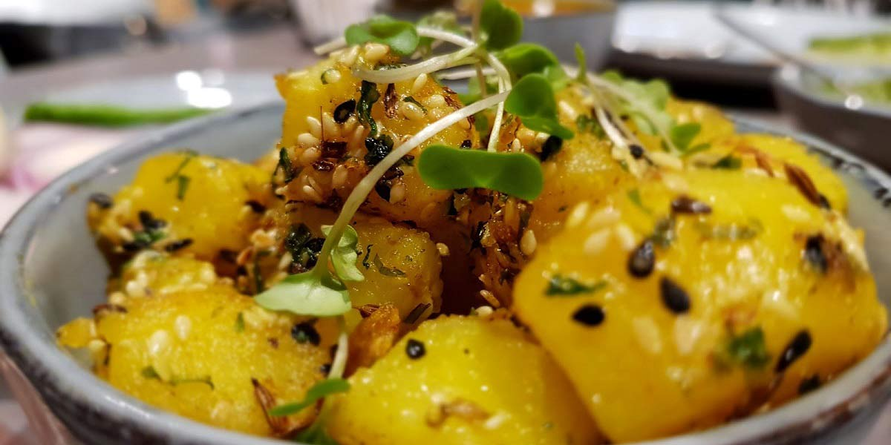

Bombay Potatoes
Recipe Specification
Ingredients List
| Ingredients | Quantity |
|---|---|
| Maris Piper Potatoes | 1kg |
| Root Ginger | 2 Inches |
| Garlic Cloves | 3 Cloves |
| Tomato Puree | 20g |
| Vegetable Oil | 30ml |
| Cumin Seeds | 1 tsp |
| Mustard Seeds | 1 tsp |
| White Onion | 1x1 |
| Ground Turmeric | ½ tsp |
| Ground Coriander | 2 tsp |
| Ground Cumin | 1 tsp |
| Garam Masala | 1 tsp |
| Chilli Powder | ½ tsp |
| Coriander | 30g |
| Salt & Pepper | To Taste |
Yield: 5-6 portions
Preparation
- Peel and cut potatoes into 1 inch cubes.
- Peel and grate root ginger.
- Peel and crush garlic cloves.
- Peel and slice white onion.
- Pick and finely chop coriander.
- Place garlic, ginger, tomato puree and 60ml water in a food processor before blending into smooth paste.
Cooking Instructions
- Place diced potato in a large pan of cold water. Season water with 1 ½ tsp of salt before placing pan over a medium/high heat.
- Bring to the boil and reduce to the simmer for 15-20 minutes until potatoes are tender.
- Remove potatoes from heat and drain water. Save 60ml of water for use later.
- Place a large frying pan over a medium/high heat. Add vegetable oil to pan.
- Add cumin seeds and mustard seed to pan before frying for 2-3 minute until aromatic.
- Add sliced onion and cook for 3-4 minutes until onions start to soften and brown.
- Add garlic, ginger and tomato paste to the pan, along with turmeric, ground coriander, ground cumin, garam masala and chilli powder. Reduce heat and cook out for 3-4 minutes.
- Add cooked potato to pan and evenly coat in masala. Add potato water to thin down mixture if required. Cook for 5-6 minutes before seasoning to taste and garnishing with fresh coriander leaves.

Serving Suggestions
This dish goes great with curry, naan bread, roti and pilaf rice.
Storing instructions
Place in an airtight container before placing in the refrigerator. Consume within 4 days of making it.
Reheating Instructions
Place in the microwave for 2-3 minutes.